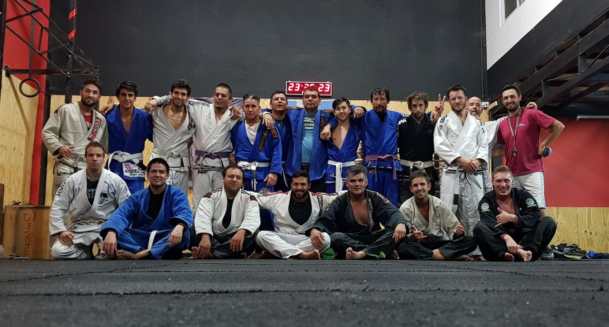

Jiu Jitsu
El Jiu-Jitsu brasileño también se conoce como BJJ en todo el mundo. Es un deporte de artes marciales brasileño basado en el agarre y la sumisión. BJJ fue desarrollado principalmente en Brasil por la familia Gracie, después de haber sido entrenado por el judoka japonés, Mitsuyo Maeda. Este deporte de combate de autodefensa gira en torno al concepto de que un luchador más pequeño y más débil puede utilizar con éxito el apalancamiento y la distribución del peso para defenderse de oponentes más fuertes y pesados.
Es difícil confirmar exactamente cuándo se originaron los movimientos y elementos del jiu-jitsu. Sin embargo, la historia del Jiu-Jitsu brasileño tiene sus orígenes con el experto en judo japonés Mitsuyo Maeda y el artista marcial brasileño Carlos Gracie. Mitsuyo Maeda llegó a Brasil en 1914, en una búsqueda por difundir el arte del judo en todo el mundo. En 1917 Carlos Gracie se convierte en alumno de Maeda, transmitiendo sus conocimientos también a sus hermanos, especialmente a Hélio Gracie. En consecuencia, la familia Gracie comenzó a adaptar los movimientos y técnicas de judo a sus habilidades. Particularmente, comenzaron a incorporar mucha más lucha terrestre en el arte marcial en sí. Más tarde, la familia Gracie inició una intensa campaña de marketing para difundir el nuevo Jiu-Jitsu brasileño por todo el país. Su búsqueda era provocar que otros combatientes se unieran a ellos en combate. De esa manera, podrían demostrar que, en Jiu-Jitsu, los combatientes más débiles podrían vencer fácilmente a los más fuertes a través de sus técnicas.
Academia
La academia Sukata Neuquen fue fundada por el faixa preta Jorge Vazquez (faixa azul en aquel tiempo) en Mayo de 2009. La misma se encuentra desde sus inicios bajo la tutela del Mestre Fredy Sukata Faixa Preta 5 grau.
Durante todos estos años la academia ha transitado un largo camino de evolucion constante. Actualmente la misma posee 3 Faixa Pretas, 1 Faixa Marron y varios Faixas Roxas y Azules. Asi mismo la academia ademas de formar artistas marciales tambien a participado de innumerables Torneos y Competiciones de Jiu Jitsu y Grappling; desde torneos locales, regionales, nacionales y hasta un campeonato del mundo (donde dos competidores obtuvieron podios).
Examenes
Ubicación
Sede Neuquen
Gimnasio Kong - Amaranto Suárez 1300 - Neuquen
Sede Cipolletti
Gimnasio PFC - Perú 601 - Cipolletti - RN